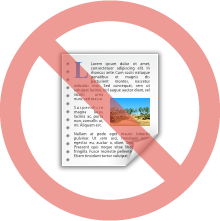

Web Applications are:
| Frameworks | Libraries |
|---|---|
| Ember | Backbone |
| AngularJS | Knockout |
| Batman | Spine |
| Sencha Ext JS | CanJS |
| jQuery |
If Browsers Worked Better
Directives can be invoked in many ways:
<span my-directive></span><span class="my-directive"></span><!-- directive: my-directive --><my-directive></my-directive>Directives can be invoked in many ways:
<span ng-bind="name"></span><span ng_bind="name"></span><span ng:bind="name"></span><span data-ng-bind="name"></span><span x-ng-bind="name"></span>Starts Angular
Defines Angular Boundary
Directives and Expressions will only be processed inside a 'ng-app' Directive
Gives you the freedom to choose: